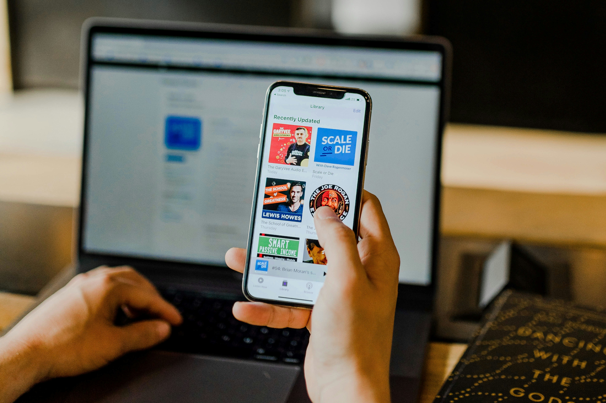
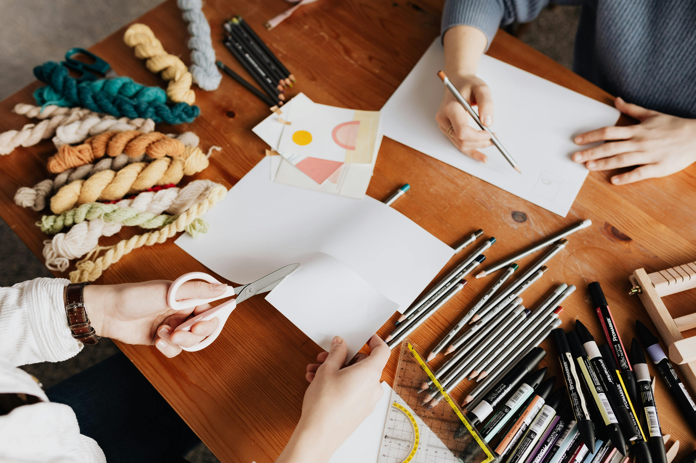

Growth-Focused
Marketing Solutions
We combine data-driven strategies with creative excellence to deliver measurable results for your brand's digital journey.
Public Relations
Rosavo delivers strategic communication process that builds and protects a brand’s reputation. We focus on shaping public perception through credible storytelling, media engagement, and meaningful community relationships. Unlike advertising, PR earns trust by securing media coverage, managing public opinion, and delivering consistent messaging across platforms. Our effective PR involves research, planning, and thoughtful execution. It uses tools such as press releases, media relations, events, digital content, and stakeholder communication to influence how audiences see and experience a brand. In times of opportunity or crisis, We safeguard credibility, strengthen relationships and position organisations as reliable, transparent, and socially responsible leaders in their industry.

Digital Communication
Digital communication sits at the heart of modern business, enabling brands to connect instantly with highly engaged audiences. In a fast-evolving media landscape, organisations must adapt to shifting consumer behaviours and online conversations. Our digital strategy combines content creation, social media management, influencer collaboration, and data-driven insights to reach and retain target markets. By leveraging digital platforms strategically, businesses strengthen brand visibility, build meaningful relationships, and remain competitive in an increasingly connected and dynamic global marketplace.

Media Relations
Media relations is a strategic PR function focused on building strong, credible relationships with journalists, editors, and media houses. At Rosavo we ensure accurate, consistent storytelling that enhances brand reputation and public trust. Through press releases, media briefings, interviews and timely responses, organisations secure positive coverage and manage public perception. Our media relations team positions a brand as reliable, newsworthy, and transparent while strengthening visibility, authority, and long-term stakeholder confidence.

Creative Design
Creative design is the visual expression of a brand’s identity and message. At Rosavo we transform those ideas into compelling graphics, layouts, and digital experiences that capture attention and communicate clearly through branding, marketing materials, social media visuals, and multimedia content, creative design ensures consistency, originality, and impact. Effective design strengthens brand recognition, enhances audience engagement and supports strategic communication goals across both digital and traditional platforms.
